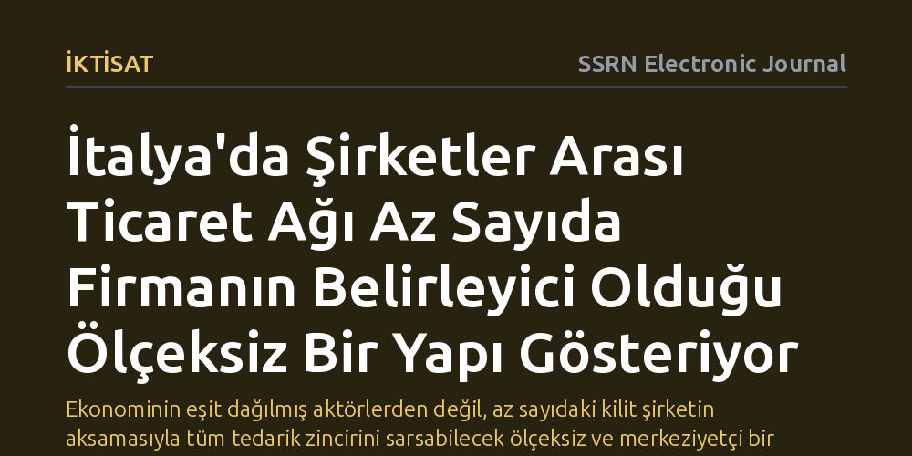

IKTISAT · SSRN Electronic Journal · 2026-09-11
İtalya Gelir İdaresi'nin elektronik fatura verilerini inceleyen çalışma, firmalar arasındaki ticari bağların ve etki dağılımının ülke genelindeki yapısını araştırdı. Bulgular, müşteri ve tedarikçi sayılarının ağır kuyruklu bir dağılım izlediğini ve ekonomik etkinin az sayıda merkezî firmada yoğunlaştığını ortaya koydu.
Ekonominin eşit dağılmış aktörlerden değil, az sayıdaki kilit şirketin aksamasıyla tüm tedarik zincirini sarsabilecek ölçeksiz ve merkeziyetçi bir ağdan oluştuğunu gösterir.

Geleneksel ekonomi yaklaşımları genellikle işletmeleri piyasada bağımsız veya birbirine benzer büyüklüklerde hareket eden birimler olarak ele alır. Oysa gerçek hayatta hiçbir şirket yalıtılmış bir ada değildir; her işletme onlarca farklı tedarikçiden girdi temin eder, ürettiği ürün veya hizmeti başka işletmelere satar ve böylece devasa bir ticari ağın parçası haline gelir. Bir firmanın iflas etmesi veya üretimini durdurması durumunda bu sarsıntının yerel bir olay olarak mı kalacağı yoksa tüm ekonomiyi saracak bir domino etkisine mi dönüşeceği, doğrudan bu ilişkiler ağının mimarisine bağlıdır.
İtalya ekonomisini mercek altına alan bu araştırma, şirketler arasındaki ticari bağların oluşturduğu karmaşık ağı haritalandırmayı ve yapısal özelliklerini çözmeyi amaçlıyor. Üretim zincirlerinin topolojisini anlamak, yalnızca akademik bir merak konusu değildir; makroekonomik krizlerin nasıl yayıldığını, tedarik darboğazlarının nerede düğümlendiğini ve sistemik risklerin hangi noktalarda biriktiğini somut olarak görebilmek için vazgeçilmez bir zemin sunar.
Araştırmacılar, sınırlı anketler veya küçük örneklemlerle yetinmek yerine doğrudan İtalya Gelir İdaresi bünyesinde toplanan işletmeler arası elektronik fatura kayıtlarının tamamını inceledi. Zorunlu elektronik fatura sistemi sayesinde elde edilen bu benzersiz veri havuzu, İtalya sınırları içinde faaliyet gösteren firmaların birbirleriyle gerçekleştirdiği ticari işlemlerin neredeyse eksiksiz bir panoramasını sunuyor.
Çalışmada her işletme ağ üzerinde bir düğüm, aralarındaki faturalandırılmış ticari işlemler ise bu düğümleri birbirine bağlayan hatlar olarak modellendi. Firma düzeyindeki bu ayrıntılı veri seti üzerinden her şirketin kaç müşterisi ve kaç tedarikçisi olduğu belirlendi; işletmelerin ağ içerisindeki merkezilik dereceleri, birbirlerine olan ortalama mesafeleri, coğrafi konumları ve sektörel dağılımları titizlikle hesaplandı.
Yapılan analizler, şirketler arası ticari ağın çan eğrisi gibi simetrik ve dengeli bir yapı sergilemediğini, aksine 'ağır kuyruklu' bir dağılım izlediğini ortaya koydu. Bu bulgu, ağın ölçeksiz bir karaktere sahip olduğu anlamına geliyor. Çoğu işletme yalnızca birkaç müşteri veya tedarikçiyle mütevazı bağlar kurarken, çok az sayıda dev şirket yüzlerce hatta binlerce firma ile bağlantı kurarak tüm sistemin omurgasını oluşturuyor.
Benzer bir ağır kuyruklu yoğunlaşma firmaların merkezilik değerlerinde de gözlendi; yani ekonomik etki ve yönlendirici güç, piyasanın geneline yayılmak yerine nispeten küçük bir şirket grubunda toplanıyor. Araştırmacılar ayrıca dağılım eğrilerinin kuyruk eğimlerini hesapladıklarında, alıcı tarafındaki (aşağı akım) yoğunlaşmanın tedarikçi tarafındaki (yukarı akım) yoğunlaşmaya göre daha belirgin olduğunu saptadı.
Bu sonuçlar, ekonomik dayanıklılık ve piyasa riskleri hakkındaki genel kabulleri kökten değiştiriyor. Ağır kuyruklu ve ölçeksiz bir ağda, rastgele seçilen küçük bir şirketin batması sisteme neredeyse hiçbir zarar vermezken, merkezde yer alan kilit bir düğümün sarsılması tüm tedarik zincirinde yıkıcı bir dalgalanmaya yol açabilir. Dolayısıyla sistemik risk, şirketlerin sadece muhasebe büyüklüklerinden değil, ağ içerisindeki bağlantı yoğunluklarından kaynaklanıyor.
Araştırma, ekonomi politikalarını tasarlayan otoritelerin ve düzenleyici kurumların piyasayı tekdüze bir yapı olarak görmemesi gerektiğini kanıtlıyor. Özellikle aşağı akım ticari ilişkilerde yoğunlaşan kilit firmaların finansal ve operasyonel sağlığının izlenmesi, olası bir ekonomik krizin domino etkisiyle tüm ülkeye yayılmasını önlemek açısından kritik bir önem taşıyor.